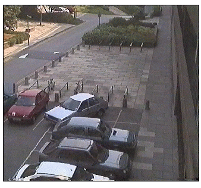
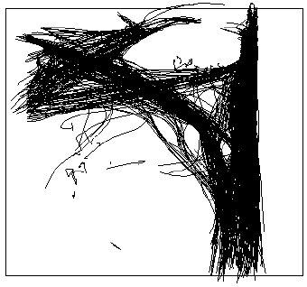
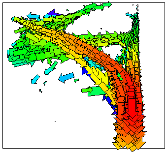
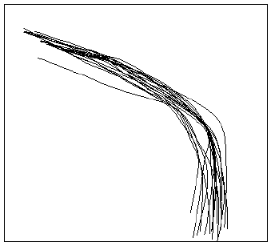

I am currently researching the modelling of `object behaviours' using detailed, learnt statistical models. The techniques being developed will allow models of characteristic object behaviours to be learnt from the continuous observation of long image sequences.
It is hoped that these models of characteristic behaviours will have a number of uses, particularly in automated surveillance and event recognition, allowing the surveillance problem to be approached from a lower level, without the need for high-level scene/behavioural knowledge. Other possible uses include the random generation of realistic looking object behaviour for use in Virtual Reality, and long-term prediction of object behaviours to aid occlusion reasoning in object tracking.
|  |  |
| Pedestrian scene | Pedestrian trajectories |
We have developed a model of the probability density functions of both the instantaneous movements and partial trajectories of objects moving within a scene (the figure above shows a typical pedestrian scene (left), and a set of pedestrian trajectories within the scene (right)). The model is learnt in an unsupervised manner by tracking objects over long image sequences, and is based on a combination of a neural network implementing Vector Quantisation and a type of neuron with short-term memory capabilities.
|  |  |
| Temporal representation of a trajectory | Trajectories matching the temporal representation |
Models of the trajectories of pedestrians have been generated and used to assess the typicality of new trajectories (allowing the identification of `incidents of interest' within the scene), predict future object trajectories, and randomly generate new trajectories. The figure above shows a diagrammatic representation of a model vector representing a partial pedestrian trajectory (left), and the set of pedestrian trajectories which it represents (right). A modified version of the model is currently being developed to learn object interactions.
My research interests also include unsupervised learning and self-organising systems.
Typicality assessment 2 [6.9M]
Trajectory prediction [8.6M]
Virtual interaction - face nodding/shaking [12.3M]